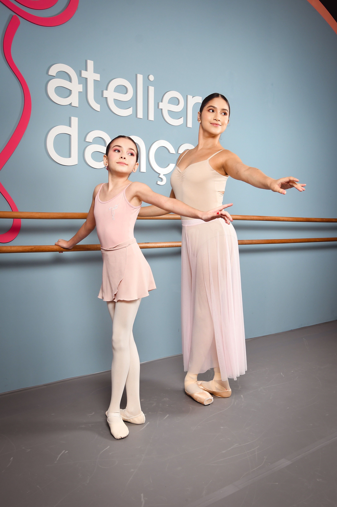
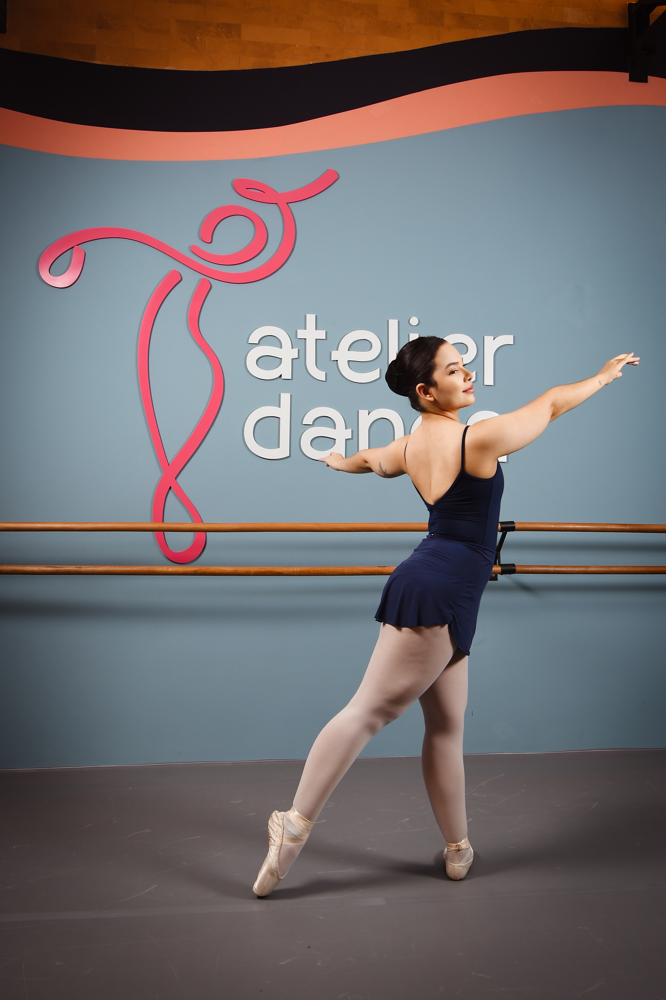
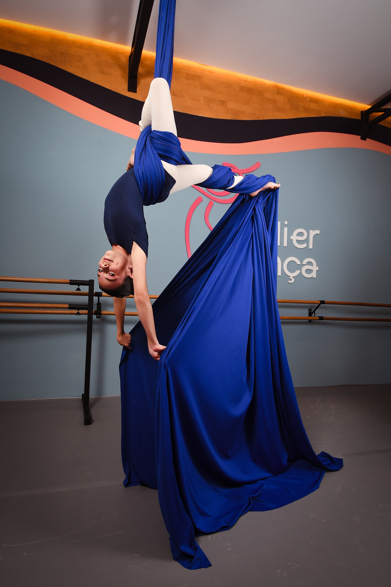
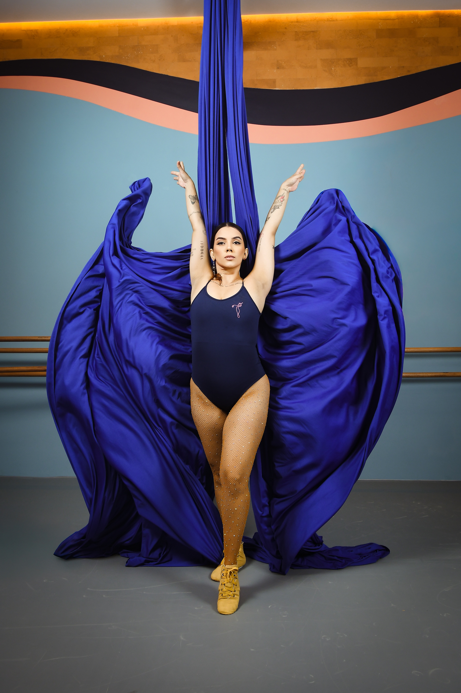
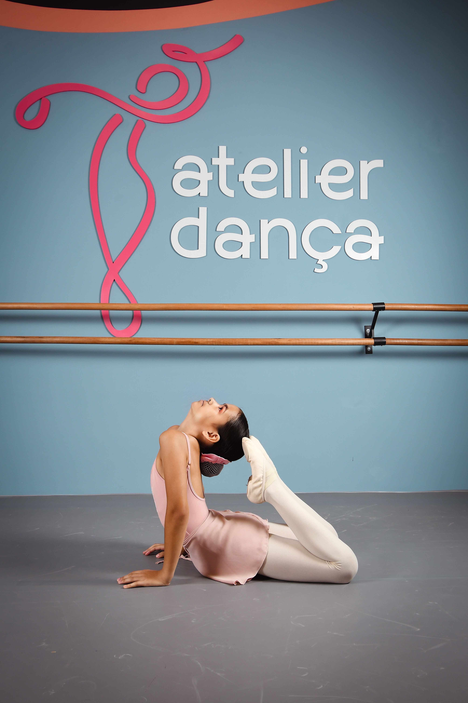
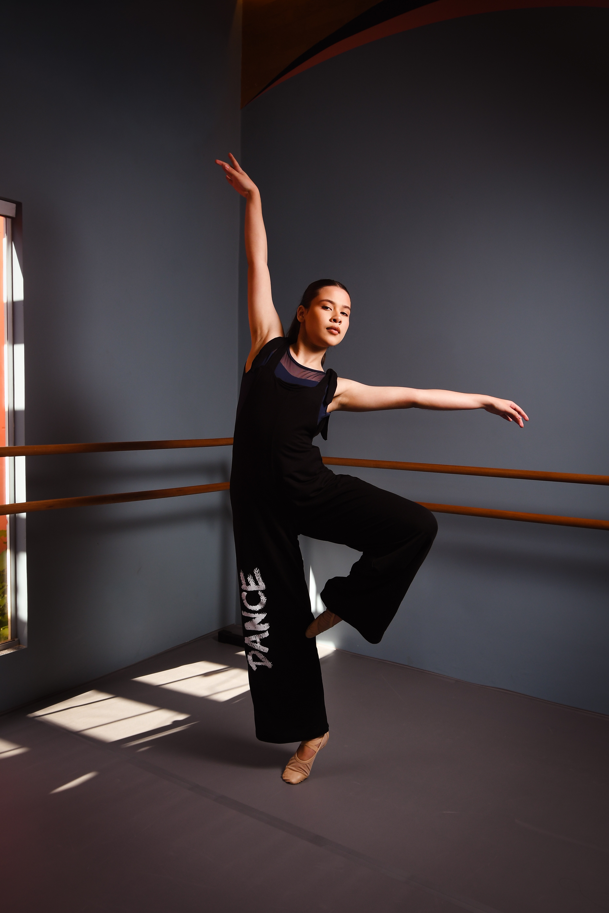
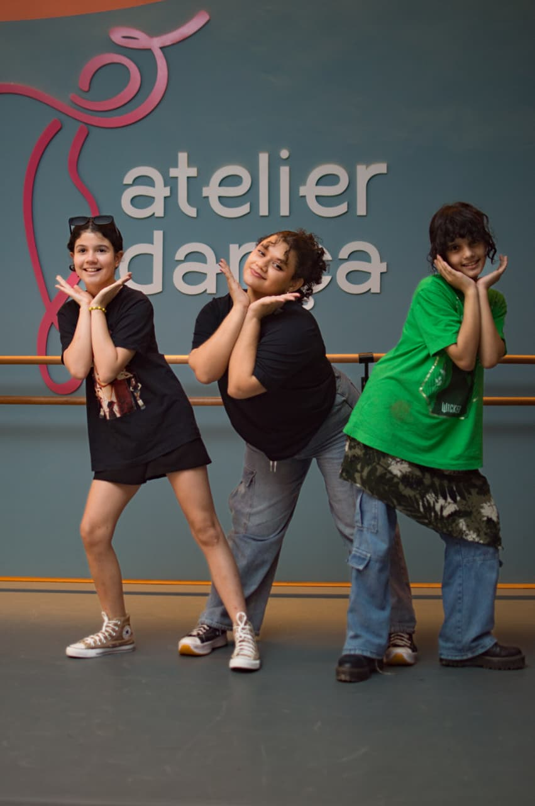
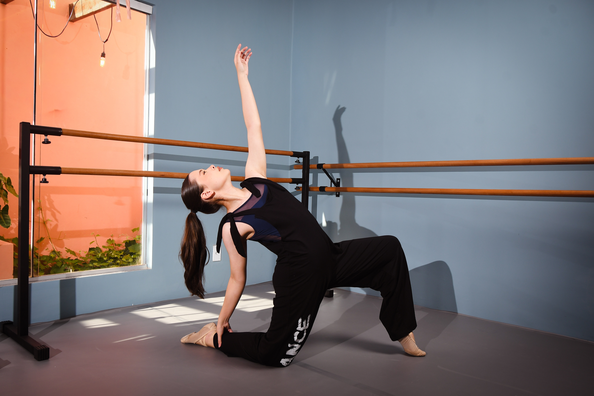

O Atelier Dança oferece turmas para crianças, adolescentes e adultos em diferentes modalidades. Aqui, cada aluno encontra um espaço para desenvolver técnica, expressão e confiança. Trabalhamos com professores qualificados, acompanhamento cuidadoso e um ambiente acolhedor e mágico para que cada pessoa evolua no seu próprio ritmo.
Agende sua aula experimentalNo Atelier Dança, cada modalidade é uma porta de entrada para o universo da arte do movimento. As aulas são organizadas por faixa etária e nível de experiência, respeitando o processo de cada aluno e estimulando o desenvolvimento técnico, artístico e humano.

O Ballet Infantil do Atelier Dança desenvolve coordenação, disciplina, musicalidade e postura de forma lúdica e estruturada. Aqui, a criança aprende técnica com carinho, fortalecendo autoestima e concentração desde os primeiros passos.

O ballet adulto é indicado para quem deseja iniciar ou retomar o contato com a dança. As aulas trabalham técnica, postura, alongamento e consciência corporal, promovendo bem-estar, confiança e conexão com a arte

Força, coragem e criatividade em cada movimento. O Tecido Acrobático Infantil desenvolve coordenação, foco e confiança com acompanhamento técnico especializado.

O tecido acrobático adulto é uma modalidade que combina força, técnica e superação. As aulas trabalham consciência corporal, flexibilidade e autoconfiança, proporcionando uma experiência artística intensa e gratificante.

Energia, ritmo e expressão! O Jazz Infantil estimula coordenação, musicalidade e presença de palco, incentivando criatividade e alegria através da dança.

O jazz adulto une técnica, ritmo e expressão em aulas dinâmicas e envolventes. A modalidade desenvolve força, flexibilidade, musicalidade e presença corporal, fortalecendo também a autoestima e a confiança.

Inspirado nas coreografias da música pop coreana, o K-Pop é uma modalidade animada e cheia de energia. As aulas trabalham coordenação, musicalidade, precisão dos movimentos e espírito de equipe.

A dança contemporânea é uma prática de exploração do movimento e autoconhecimento. As aulas trabalham respiração, consciência corporal e expressão pessoal em um espaço de escuta do corpo e partilha com o grupo.
Comprometidos com a excelência no ensino da dança, oferecemos um ambiente pensado para o desenvolvimento artístico e humano de cada aluno, respeitando processos individuais e valorizando cada trajetória.